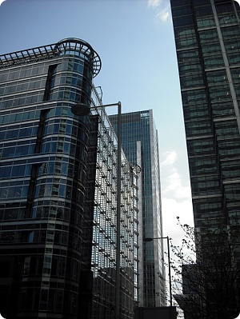
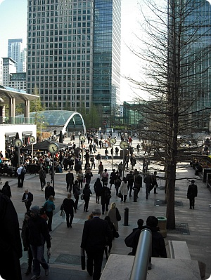
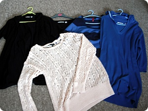
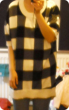
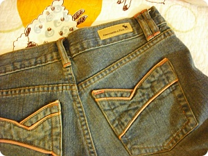
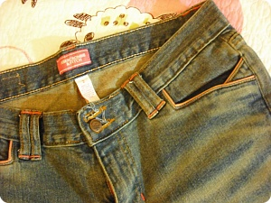
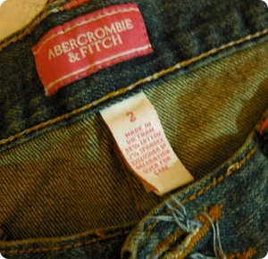

금요일날 런던에 볼일이 있어서 외출맨날 Maidstone에서 학교도 걸어댕기구딱히 런던나갈일이 아니믄 지하철 버스 탈필요도없고고층건물도 드문 알흠다운(....;;) 동네에서 살다가깨끗하고 넓은 길에 빽빽한 고층건물 엄청나게 큰 지하쇼핑몰 등등;;오랜만에 회사가 모여있는 지역을 댕겨오니모든것이 너무 새로웠다 +_+워어~워어~이러믄서 마구 사진을 찍어대었다능;;;;

금요일날 오후5시쯤 회사근처 펍에는 벌써 사람들로 바글바글@_@이날 진짜 바보짓의 종합세트였던게;;;주 목적은 사진촬영이어서전날 예비용 배터리도 충전해놓고 찾아갈 장소도지도다 출력하고 체크하고 출발했는데런던도착해서 버스에 올라탔을때 순간 깨달았다.........디카 배터리가 빠방하믄 뭐하나SD카드를 빼먹고왔는데...............OTL;;;;다행히 부츠에서 SD카드를 팔고있는걸 발견2기가에 15파운드..................OTL아 제길 ㅜㅜ 하지만 급한사람은 선택권이 별로없다;;눈물을 머금고;; 2기가짜리 메모리카드를 15파운드를 주고 구입;;
그리고 그 순간 내 수중에 현금이 바닥났다;;;카드에서 돈을 찾을려고 근처 ATM기를 갔는데깜빡하고 Easy save에서 Debit카드로 돈 이체해놓는걸까묵은거다.........OTL;;(Easy save는 체크카드 기능이 없고 현금을 찾고싶으면 해당은행 ATM에서만 가능하다;;)내가 사용하는 은행은 로이드인데원래 이런날일수록 다른 은행은 여기저기 잘도보이지만 내가거래하는 은행은보이지 않는법!!!...............ㅡㅜ불행중 다행인게 평소에는 잘 들고나오지 않는 아이팟터치를 들고나와서스타벅스 앞에서 찌질찌질 거리믄서 인터넷접속해서 Debit카드로 돈을 옮겨서 겨우 찾을수있었다는 슬픈이야기;;;;;(퍽)'런던에가서 사진을 찍어온다'라는게 일케 힘든일이었어?? ㅡㅜ 흑;;그렇게 오만 바보짓으로 볼일을 마치구;;옷 장만하러 거거~타이밍은 좋았던게 여기저기서 mid season sale중+_+나에게 있어서 유니크로 = 아무 무늬없는 기본티사러가는곳이기 때문에 여기서 일케 반값 행사해주면 행복하다능//ㅅ//

쟁여온게 유니크로 깜장 반팔가디건 + 깜장 튜닉 + 파란색 롱 후드티H&M 파란색 줄무늬 티 랑TOP SHOP 유일하게 샤방(?)한 분홍색옷TOP SHOP만 빼믄 껌정색과 퍼런색 상의들;;...........나 봄옷사러 간거 맞지??;;;;;;;여름에 내 유니폼이 될 확률이 높은 깜장가디건요래 헐렝~하고 긴 상의가 좋아요옷은 무조건 편해야혀!!요건 H&M에서 건진 줄무늬티(.......또;;;;)세일해서 3파운드!!!! 이건 사야했음 ㅋㅋ요건 유일하게 제값주고 산 TOP SHOP 그물??티집에 옷 사놓은거 보면 확고한 취향줄무늬, 깜장, 그물계열ㅋㅋㅋ(동생곰은 이거보더니 '어부냐?' 라고했;;;)그나저나 올해 저런스타일이 유행하는지여기저기에서 비슷한 옷들이 많이보인다TOP SHOP자체에서도 디자인만 살짝다르게 해서여러종류가 있었음
요건 전에 H&M에서 난 제값주고 샀는데(그리고 저티가 워낙 벙벙~해서 자켓종류랑은 같이 못입고날은 춥고해서 딱 한번인가 입고 옷장속에서 휴식중이던 와중;;)이번에 가보니 세일코너에 1/3가격으로 엄청 걸려있었음 ㅡㅜ잘 안팔렸었나? 제기 ㅜㅜ

그리고 죠기 위에 입은 청바지가내가 일본서 한국돌아가자마자 동생곰이 선물한 바지인데(2X살이 되도록 동네초딩에서 못벗어난 내가 불쌍해보였나봄;;;울집은 차라리 남동생인 얘가 훨 센스있고 옷도 잘입는다 ㅜㅜ)그때 이넘이 사이즈2짜리 청바지를 주문해서내가 뿜었는데"너 이쇄키 일부러 이거산거지;; 차라리 그냥 대놓고 다이어트를 하라고해 임마!!".....라고;; ☞☜;;;청바지 자체는 넘 이뻐서// 저 분홍스티치도 그렇고언젠간 입겠지~(←;;;) 라믄서 영국에 가져왔었다^^;;어제 옷정리하다가 눈에띄여서 혹시나 해서 입어봤는데엄훠~이제 입고나갈수있쒀 >ㅂ</(........전에는 단추'만' 잠겼음;;)
히........힘내겠습니다!!! (뭘;;;)어제하루 마실댕겨오고옷 쇼핑하고 하는게 기분전환에 도움이 되네용꿀꿀하믄 이쁘게 차려입고 할일없어도 밖에 나갔다오라구집에만 있지말라는 김여사의 말씀이 초금 이해가 가는 하루였습니다^^;;그리고 집에돌아와서 혼자 좋~다고 옷입어보믄서 놀고말이죠 헷헷//이...이제 핵교 시작하니까 현실도피 그만할거에요;;;지....진짜로;;;